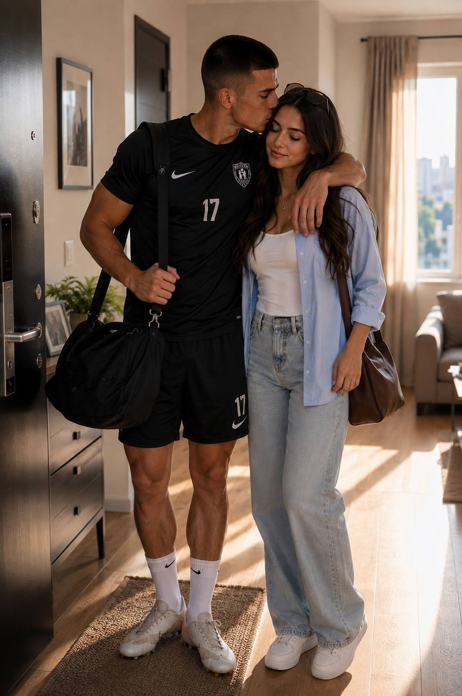

НОВЫЕ СЕРИИ
Идеальный парень
Аня верит, что Макс изменился. Но некоторые вещи слишком сложно скрывать.
AI-сериалы, драмы и тайны. Смотри серии, читай продолжения и решай, что произойдёт дальше.
Поддержка идёт на AI-инструменты, создание новых серий, озвучку, изображения и развитие Hidden Frame AI.
Минимальная поддержка — от 10 ₴От первой встречи до последней тайны.


Полные истории с продолжениями, неожиданными поворотами и финалами, которых нет в коротких постах.
Перейти к историям →
Один голос с устройства. Результаты сохраняются в Firebase.
Мы в соцсетях
Серии, новые проекты и продолжения.